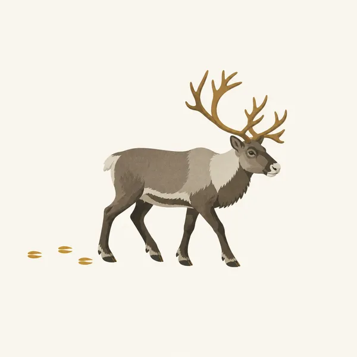
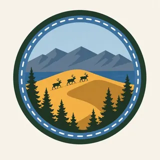

01
The Great Kobuk Sand Dunes
The park's icon, an active dune field the overview page calls the largest of its kind, high-latitude and still moving, out of place beside boreal forest and tundra.
TrailMark Archive Edition
Alaska | Arctic Circle
A monument on December 1, 1978, for the sand dunes and the river valley around them. A national park on December 2, 1980.
Archive No. TM-KOVA-048
National Park since 1980
Collection Kobuk River
Park Overview
President Jimmy Carter proclaimed Kobuk Valley National Monument on December 1, 1978. ANILCA redesignated it a national park on December 2, 1980.
The Geodiversity Atlas gives the park at 1,750,716 acres, straddling the Kobuk River about 35 miles north of the Arctic Circle in Alaska's Northwest Arctic Borough. There are no roads or maintained trails; access is by small plane or the river itself.
The park protects the Great Kobuk Sand Dunes, an active dune field the overview page calls the largest active, high-latitude dune field on Earth, along with the Hunt River and Little Kobuk River dune fields nearby.
Emotional Thesis
The header painting sets gold dunes against a blue river bend and distant mountains, spruce forest holding the lower ground between them. NPS describes the Great Kobuk Sand Dunes rising unexpectedly out of the tundra and trees, which is the park's actual first impression, not a painter's exaggeration.
Caribou are the other subject. Hundreds of thousands migrate through the park between calving grounds near the Arctic Ocean and wintering grounds in the boreal forest to the south, their paths crossing the dunes themselves.
Landscape Highlights
01
The park's icon, an active dune field the overview page calls the largest of its kind, high-latitude and still moving, out of place beside boreal forest and tundra.
02
Where caribou cross the Kobuk River on their seasonal migration, and where the Iñupiat have harvested them for thousands of years. Archaeologist J. Louis Giddings did pivotal excavation work here.
03
No road or maintained trail reaches the park. The Kobuk River is described as an ancient and current corridor for both people and wildlife, the same function it has always served.
Wildlife
Caribou are the park's defining animal, crossing the Kobuk River and the dune field itself on a seasonal migration between Arctic Ocean calving grounds and southern wintering grounds. The extra drawing, a caribou with its tracks behind it, is the archive's image of that migration.

01
The migration's timing follows the season, not a fixed calendar date; NPS does not commit this essay to a specific month.
02
Salmon and sheefish, along with berry harvesting, remain part of subsistence life for people along the Kobuk River today, not only history.
03
A caribou crossing a dune field is a real, photographed behavior here, not an artist's invention; the dunes sit directly on the migration route.
Geology
The Great Kobuk Sand Dunes, along with the smaller Hunt River and Little Kobuk River dune fields, make this one of the few places on Earth with a large active dune field at this latitude.
01
The dunes rise directly out of boreal forest and tundra, a juxtaposition the park's own overview page calls unexpected.
02
The Kobuk River both carries sediment into the system and serves as the main route through the valley, geology and access sharing the same feature.
03
No dune-height figure is stated on the NPS pages opened for this essay, so none is given here.
The main season for float trips on the Kobuk River and for reaching the dunes by small plane.
Caribou move south toward wintering grounds in the boreal forest, crossing the river and dunes as they go.
Deep cold and short days across the valley. Access is limited and self-sufficiency is essential; NPS has current guidance.
Caribou begin moving north toward calving grounds near the Arctic Ocean as the season turns.
Photography
Sand alone could be any desert. The boreal forest and the river beside the dunes are what place this photograph above the Arctic Circle.
01
The dunes rising directly out of spruce forest is the park's actual, specific geography, worth keeping visible.
02
A wide shot with the Kobuk River's curve gives the dune field a sense of place and scale.
03
A caribou crossing the dunes or the river is a wildlife event, not a scene to approach for a closer shot.
Field Notes
The sand should not be there, under that latitude, and the caribou cross it anyway, the way they always have.
TrailMark Field Notes

Badge Story
The badge fails if it reads as a warm-climate desert. A river, spruce trees, and distant mountains have to hold the dunes in their real, arctic setting.
Gold sand against a cool blue river and sky.
A caribou or its tracks can anchor the scene without needing the whole herd.
No cactus, no warm desert cues. This is boreal Alaska, not the Southwest.
Archive No.048
LocationKobuk River Valley
ReleaseDune Mark
Stewardship / Safety
Kobuk Valley has no road or maintained trail. Visits require float planes, boats, or serious backcountry skill, and subsistence use by local communities continues within the park.
Plan access through the Northwest Arctic Heritage Center in Kotzebue; self-sufficiency is not optional here.
Onion Portage remains an active subsistence site. Respect ongoing Iñupiat use of the crossing, not only its archaeological value.
Weather and river conditions can change a float trip's plan with little warning. Build in flexibility.
Leave archaeological material where it lies. The valley's long human record is the reason parts of it are protected.
Current conditions, fees, and alerts are on the National Park Service site.
Continue the Archive
Neither park has a road or a maintained trail. Gates of the Arctic is peaks and wild rivers; Kobuk Valley is dunes and a caribou crossing worked for thousands of years. Lake Clark, in this batch, is the volcano side of the same wilderness system.